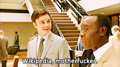

Here's why you shouldn't edit your own Wikipedia page.
It looks kinda sneaky. You'll get caught. It'll be embarrassing for you.

Okay, so you're a public figure, or maybe you work for a big brand. And you figure you'll go to Wikipedia to check out what the article about you says.
And you look, and you realize something is totally inaccurate—or worse, unflattering! And so you say to yourself, "I'm just going to fix it."
Stop right there. Here are a few reasons you maybe shouldn't do that.
Already convinced? Here are some things you can do instead.
Why shouldn't I edit my own Wikipedia page?
Editing your own Wikipedia page is a conflict of interest.
Wikipedia is one of the most expansive online resources of knowledge and while it's far from perfect, we all benefit from articles that are writen by impartial observers.
Wikipedia's own policies and guidelines have a comprehensive section on Wikipedia conflicts of interests:
Conflict of interest (COI) editing involves contributing to Wikipedia about yourself, family, friends, clients, employers, or your financial and other relationships. Any external relationship can trigger a conflict of interest. That someone has a conflict of interest is a description of a situation, not a judgment about that person's opinions or integrity.
COI editing is strongly discouraged on Wikipedia. It undermines public confidence, and it risks causing public embarrassment to the individuals being promoted. Editors with a COI cannot know whether or how much it has influenced their editing. If COI editing causes disruption, an administrator may opt to place blocks on the involved accounts.
Sure, but anyone can edit Wikipedia, right?
Yes, anyone can edit Wikipedia.
It's what makes it great.
In fact, every once in a while, some charming rogue adds Paul Ryan to a list of invertebrates. It definitely doesn't fall within the Wikipedia guidelines, but damn if it isn't funny.
But just because it's good for a little light trolling doesn't mean it's a smart idea for your brand.

via @alplicable
I don't care about the guidelines or ethics. What's stopping me?
Public embarrassment and shaming.
Leaving aside the clear conflict of interest (that you're supposed to be disclosing who you are if you're editing with a conflict of interest), your edit will be reviewed by a team of volunteer editors on the site, and every edit you make is publicly logged.
Your IP address and other information about you may wind up public, and... you just might get caught.
Think it can't happen to you?
Wikipedia keeps a list of all the people who have been caught self-editing—including the founder of Wikipedia Jimmy Wales himself.
There's even a Twitter account that tracks every edit made by U.S. Congressional staffers:
If you do get caught, your edit will almost certainly be reversed. Your page will be subjected to more scrutiny, and the community might add even more unflattering (but verifiable details).
So ask yourself—is the potential backfire worth it?

But something is wrong about me on the internet. How do I fix it?
Well, you're not totally S.O.L.
Ach, you're right, that's the worst! Okay here are a few things you can do instead of sneakily trying to edit your own Wikipedia page:
- Edit honestly and openly: If you absolutely have to edit your Wikipedia page, do it openly. Say who you are, back up your sources, and be ready to engage in the Talk section of your article. But be prepared for community editors to reject your edits, especially if they're subjective or tonal edits.
- Talk it out: Okay, so you aren't going to edit your Wikipedia page yourself, but you can start a discussion in the Talk section of the article. Provide the sources and citations you have, and ask contributors to consider editing.
- Hire an editor: You can commission a Wikipedia editor to update your page—generally done with all the same disculosures as editing yourself, they just know a little more about Wikipedia's community guidelines and processes. Wikipedia as a community gets a little fuzzy about this, so if you want to go this route, you're definitelyon your own.
- Work on yourself: You might never be able to directly control your Wikipedia page without incurring the wrath of the inernet, but you can make sure the rest of your internet presence reflects you or your brand:
- Create a keyword-friendly website;
- Maintain an active social media presence;
- Hell, do interviews and profiles with news outlets where you talk specifically about the very items you wish were covered in your page.
I bet you just learned a lot, right?
Do smart things on the internet. Come chat with us.
(We don't bite.)